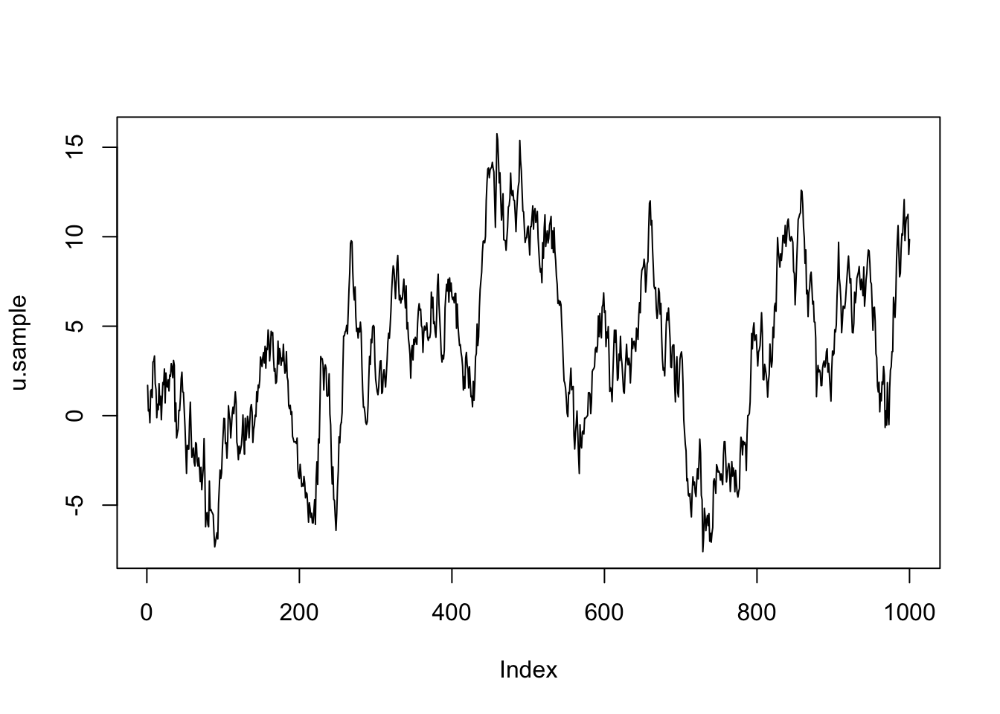

In this topic we compute with the precision matrix for the AR1 model component.
library(INLA)We model \(u\) as an autoregressive model of order 1 over time t.
This is described as \[u_t = \rho u_{t-1} + \epsilon_t\] where \(\epsilon_t\) is iid Gaussian randomness.
The two hyper-parameters for this component are \(\rho\) and the marginal standard deviation \(\sigma_u\).
The this topic is about is the \(Q\) matrix in \[{u} \sim \mathcal N(0, Q^ {-1}) \]
Per definition of precision matrix \[\log(\pi(u)) = c - \frac{1}{2} u^\top Q u. \]
Rewrite definition of our model component as a function of \(\epsilon\). \[ \epsilon_t = u_t - \rho u_{t-1}, \] giving the joint distribution \[\log(\pi(u)) = c - \frac{1}{2} (\epsilon_2^2 + \epsilon_3^2 + \epsilon_4^2 + ... + \epsilon_T^2) . \] Further, \[\log(\pi(u)) = c - \frac{1}{2} ((u_2 - \rho u_{1})^2 + (u_3 - \rho u_{2})^2 + (u_4 - \rho u_{3})^2 + ... + (u_T - \rho u_{T-1})^2) . \]
Matching this term to the \(Q\) matrix, we get \[u^\top Q u = u_2^2 -2 \rho u_2 u_1 + \rho^2u_1^2 + u_3^2 -2\rho u_3u_2 + \rho^2u_2 + u_4^2 -2\rho u_4u_3 + \rho^2u_3 +...\]
By experimenting a bit with the \(u^\top Q u\) (quadratic) form, we see that the only way to make a symmetric \(Q\) is by definig the following \(Q\).
N = 10
rho = 0.95
Q = matrix(0, N, N)
diag(Q) = 1+rho^2
for (i in 1:(N-1)) {
Q[i, i+1] = -rho
Q[i+1, i] = -rho
}
print(Q)## [,1] [,2] [,3] [,4] [,5] [,6] [,7] [,8] [,9] [,10]
## [1,] 1.90 -0.95 0.00 0.00 0.00 0.00 0.00 0.00 0.00 0.00
## [2,] -0.95 1.90 -0.95 0.00 0.00 0.00 0.00 0.00 0.00 0.00
## [3,] 0.00 -0.95 1.90 -0.95 0.00 0.00 0.00 0.00 0.00 0.00
## [4,] 0.00 0.00 -0.95 1.90 -0.95 0.00 0.00 0.00 0.00 0.00
## [5,] 0.00 0.00 0.00 -0.95 1.90 -0.95 0.00 0.00 0.00 0.00
## [6,] 0.00 0.00 0.00 0.00 -0.95 1.90 -0.95 0.00 0.00 0.00
## [7,] 0.00 0.00 0.00 0.00 0.00 -0.95 1.90 -0.95 0.00 0.00
## [8,] 0.00 0.00 0.00 0.00 0.00 0.00 -0.95 1.90 -0.95 0.00
## [9,] 0.00 0.00 0.00 0.00 0.00 0.00 0.00 -0.95 1.90 -0.95
## [10,] 0.00 0.00 0.00 0.00 0.00 0.00 0.00 0.00 -0.95 1.90A confusing part of the AR1 model is that we must define the first value to have the correct distribution to make the process stationary, see inla.doc("ar1") for details. We fix this now:
Q[1,1] = 1
Q[N,N] = 1For comparison later, we now create a function for \(Q\), summarising our computations so far.
precision.ar1 = function(N, rho){
Q = matrix(0, N, N)
diag(Q) = 1+rho^2
for (i in 1:(N-1)) {
Q[i, i+1] = -rho
Q[i+1, i] = -rho
}
Q[1,1] = 1
Q[N,N] = 1
return(Q)
}The matrix \(Q\) we have created stores all the zeroes! Let us convert this to a sparse matrix and compare them.
Q = precision.ar1(10, 0.9)
print(Q)## [,1] [,2] [,3] [,4] [,5] [,6] [,7] [,8] [,9] [,10]
## [1,] 1.0 -0.9 0.0 0.0 0.0 0.0 0.0 0.0 0.0 0.0
## [2,] -0.9 1.8 -0.9 0.0 0.0 0.0 0.0 0.0 0.0 0.0
## [3,] 0.0 -0.9 1.8 -0.9 0.0 0.0 0.0 0.0 0.0 0.0
## [4,] 0.0 0.0 -0.9 1.8 -0.9 0.0 0.0 0.0 0.0 0.0
## [5,] 0.0 0.0 0.0 -0.9 1.8 -0.9 0.0 0.0 0.0 0.0
## [6,] 0.0 0.0 0.0 0.0 -0.9 1.8 -0.9 0.0 0.0 0.0
## [7,] 0.0 0.0 0.0 0.0 0.0 -0.9 1.8 -0.9 0.0 0.0
## [8,] 0.0 0.0 0.0 0.0 0.0 0.0 -0.9 1.8 -0.9 0.0
## [9,] 0.0 0.0 0.0 0.0 0.0 0.0 0.0 -0.9 1.8 -0.9
## [10,] 0.0 0.0 0.0 0.0 0.0 0.0 0.0 0.0 -0.9 1.0Q = precision.ar1(10, 0.9)
Q = as(Q, "sparseMatrix")
print(Q)## 10 x 10 sparse Matrix of class "dgCMatrix"
##
## [1,] 1.0 -0.9 . . . . . . . .
## [2,] -0.9 1.8 -0.9 . . . . . . .
## [3,] . -0.9 1.8 -0.9 . . . . . .
## [4,] . . -0.9 1.8 -0.9 . . . . .
## [5,] . . . -0.9 1.8 -0.9 . . . .
## [6,] . . . . -0.9 1.8 -0.9 . . .
## [7,] . . . . . -0.9 1.8 -0.9 . .
## [8,] . . . . . . -0.9 1.8 -0.9 .
## [9,] . . . . . . . -0.9 1.8 -0.9
## [10,] . . . . . . . . -0.9 1.0The “.” signifies that the zeroes are not stored. How is this done instead? A list of indices \((i,j)\) together with their value \(x_{i,j}\) are stored as 3 lists.
str(Q)## Formal class 'dgCMatrix' [package "Matrix"] with 6 slots
## ..@ i : int [1:28] 0 1 0 1 2 1 2 3 2 3 ...
## ..@ p : int [1:11] 0 2 5 8 11 14 17 20 23 26 ...
## ..@ Dim : int [1:2] 10 10
## ..@ Dimnames:List of 2
## .. ..$ : NULL
## .. ..$ : NULL
## ..@ x : num [1:28] 1 -0.9 -0.9 1.81 -0.9 -0.9 1.81 -0.9 -0.9 1.81 ...
## ..@ factors : list()As you see, this “dgCMatrix” uses \(p\) instead of \(j\), storing the entries in a slightly different way.
What is all the fuzz about?
for (N in c(10, 1E2, 1E3, 5E3 )) {
Q = precision.ar1(N, 0.9)
os1 = round(object.size(Q)/1000)
Q = as(Q, "sparseMatrix")
os2 = round(object.size(Q)/1000)
print(paste0("For N is ", N, " we go from ", os1, " kb to ", os2, " kb"))
}## [1] "For N is 10 we go from 1 kb to 2 kb"
## [1] "For N is 100 we go from 80 kb to 5 kb"
## [1] "For N is 1000 we go from 8000 kb to 41 kb"
## [1] "For N is 5000 we go from 2e+05 kb to 201 kb"Creating a full matrix and then using as.sparse is bad practice. You should create the i, j, x indices/values and use ?sparseMatrix. Your entire inference algorithm, for large problems, might be quicker than writing down the full matrix even once.
The basic part of computing with precision matrices is being able to do the cholesky factorisation to get \(Q = L L^\top\).
Q = precision.ar1(1000, 0.99)
L = chol(Q)
print(sum(abs(Q- t(L)%*%L)))## [1] 0We know that \[det(Q) = det(L^ \top) det(L) = det(L)^ 2. \] It is very important to know that we never want to compute determinants, only log-determinants. Similarly to how we never compute probabilities only log probabilities. This is because of numerical stability (if you don’t take the log, most things are infinite or zero).
\[logdet(Q) = 2 logdet(L) \] How to find the determinant of \(L\)? Since the cholesky is lower or upper triangular, we can just take the product of the diagonal! If you look at the matrix \(L\) this is actually upper triangular, since this is R default.
\[logdet(Q) = 2 \sum_i \log(L_{i,i}) \]
Assume that we want to compute the (joint) probability that \(u_i=0.1\) for all \(i\) simultaneously (as an example).
The general formula \[\log(\pi(u)) = \frac{1}{2}\log \left| (2\pi)^ {-1} Q \right| - \frac{1}{2} \vec u^\top Q \vec u\] gives us \[\log(\pi(u=0.1)) = -\frac{N}{2}\log(2\pi) + \frac{1}{2}\log \left| Q \right| - \frac{1}{2} 0.1^\top Q 0.1.\]
In code this is:
pt1 = rep(0.1, nrow(Q))
log.prob.pt1 = -nrow(Q)/2*log(2*pi) + 0.5*2*sum(log(diag(L))) - 0.5 *pt1 %*% Q %*% pt1
print(log.prob.pt1)## [,1]
## [1,] -921To sample from \(Q\) we just define \(u\) as the solution to \[Lu = z \] where \(z\) are iid Gaussians \(\mathcal N(0, 1)\). Then \[precision(u) = L^\top L.\] The sampling code we can write as follows.
set.seed(2017)
z.sample = rnorm(nrow(Q))
u.sample = solve(L, z.sample)
plot(u.sample, type="l")